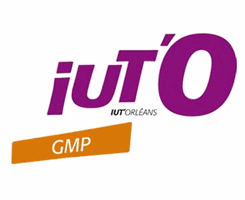
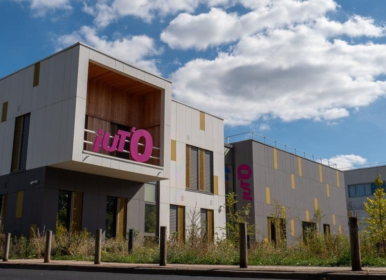
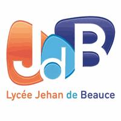

Ma formation, du lycée à l'ingénierie industrielle.
Un baccalauréat technologique, puis un BUT Génie Mécanique et Productique : trois années pour apprendre à concevoir des pièces mécaniques et à organiser leur fabrication.

IUTSeptembre 2024 - Août 2027 · Alternance
BUT Génie Mécanique et Productique
IUT d'Orléans · Parcours Innovation pour l'industrie
Le BUT GMP forme les techniciens qui font le lien entre un plan et une pièce réelle. J'y ai appris à lire un plan, à dessiner une pièce en 3D sur ordinateur, à comprendre comment elle se fabrique concrètement en atelier, et à traduire tout cela en une gamme de fabrication : la liste ordonnée des opérations à réaliser pour la produire. La formation m'a aussi appris à raisonner en coûts et en délais, et pas seulement en solutions techniques.
Lecture de plan & cotation
Interpréter un plan de définition et ses tolérances : les écarts de dimension que le client accepte, et ceux qui rendent la pièce inutilisable.
CAO et mise en plan
Modéliser une pièce en 3D en CAO (conception assistée par ordinateur), puis en tirer des plans directement utilisables par l'atelier. Logiciels : Creo et Onshape.
Procédés de fabrication
Connaître les procédés de fabrication - l'usinage, qui enlève de la matière, la mise en forme, qui la déforme, et l'assemblage - pour choisir celui qui convient à la forme voulue et au nombre de pièces à produire.
Gammes et industrialisation
Établir une gamme de fabrication : découper la production d'une pièce en opérations successives, en précisant pour chacune la machine utilisée et le temps nécessaire.
Métrologie et contrôle
Métrologie : choisir les moyens de mesure et vérifier qu'une pièce correspond bien à son plan.
Gestion de projet
Mener un projet technique en équipe, avec un budget et des délais à tenir - comme sur la réindustrialisation du programme A330 Neo.
Logiciels utilisés à l'IUT
Le parcours de spécialisation
En deuxième année, j'ai choisi le parcours Innovation pour l'industrie, qui apprend à chercher des solutions plutôt qu'à appliquer des recettes. Concrètement : partir d'un problème concret en atelier - une pièce trop longue à fabriquer, un outillage inadapté - et remonter jusqu'à une solution technique chiffrée, à défendre devant une équipe.
Conception
Traduire un besoin industriel en exigences précises, techniques comme économiques, puis imaginer la solution qui y répond.
Innovation
Proposer des solutions nouvelles face à un problème industriel, plutôt que de reproduire l'existant.
Industrialisation
Passer de l'idée à la production réelle, et suivre la vie du produit et des moyens qui servent à le fabriquer.

IUT d'Orléans - département GMP

JdBSeptembre 2022 - Juillet 2024
Baccalauréat STI2D
Lycée Jehan de Beauce · Chartres
Obtenu au lycée Jehan de Beauce à Chartres, en spécialité Sciences et Technologies de l'Industrie et du Développement Durable, option ITEC (Innovation Technologique et Éco-Conception) - une première approche de la conception de produits industriels et de leur impact environnemental.
Mention Très BienLogiciel utilisé au lycée
Langues
Anglais et espagnol
niveau autonome : lire une norme, échanger avec un client
niveau intermédiaire